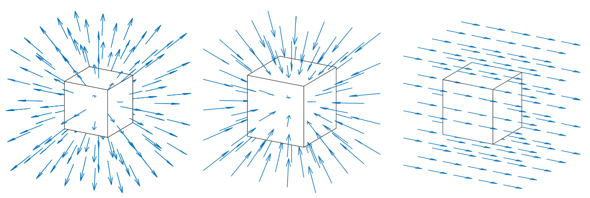
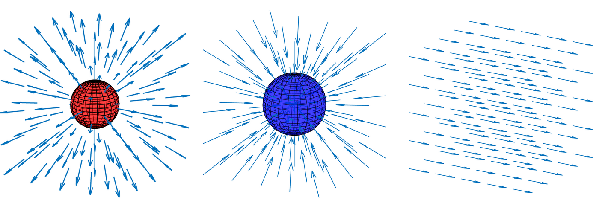
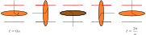
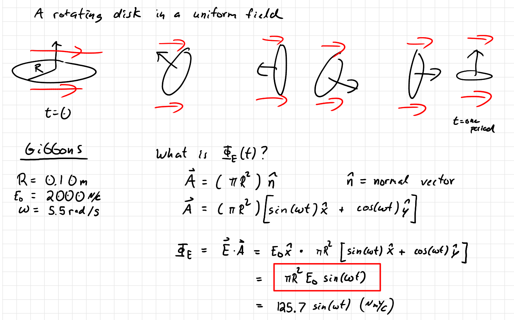
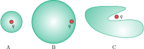

University Physics II

Electric Flux and Gauss's Law
PQ: Flux Intro
Based on electric flux only, what kind of charges are in the boxes?

PQ: Flux Intro (sol)
Based on electric flux only, what kind of charges are in the boxes?

Positive charge, negative charge, and no charge.
PQ: Rotating Flux
Consider a disk of radius $r=0.33\,$m that is rotating at a constant rate of $\omega=
3.50\,$rad/s. The disk is initially orthogonal to a uniform electric field of strength $|\vec{E}|=7.77\times 10^3\,$N/C.
What is the electric flux of the disk as a function of time?

PQ: Rotating Flux (sol)
PQ: Ranking Gauss's Law
Rank from smallest to largest the electric flux of the charge distributions and Gaussian surfaces depicted below.
PQ: Ranking Gauss's Law (sol)
PQ: Gauss's Law find E-field
Two large parallel plates carry a surface charge of $\sigma$. The plates have opposite signs of charge and are separated by a distance d. Use Gauss's Law to show that the electric field between two plates is
\begin{equation} \vec{E}=\frac{\sigma}{\epsilon_0} \text{ (from positive plate to negative)} \end{equation}Make sure to draw clear diagrams and clearly explain the Gaussian surfaces you are using and why.